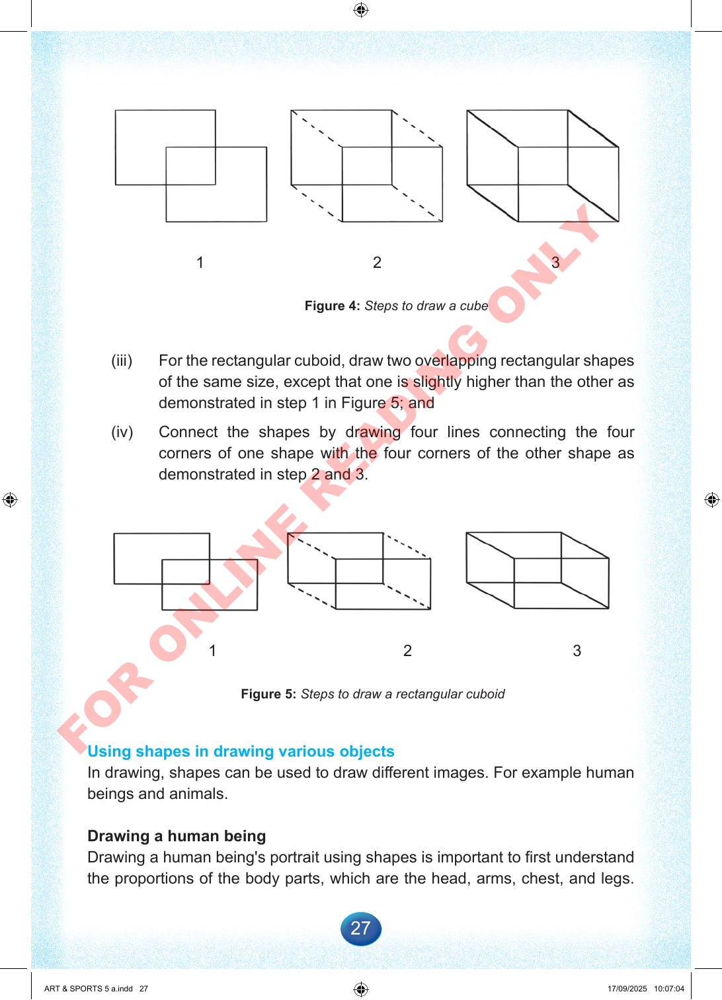

27
1
2
3
Figure
4:
Steps
to
draw
a
cube
(iii)
For
the
rectangular
cuboid,
draw
two
overlapping
rectangular
shapes
of
the
same
size,
except
that
one
is
slightly
higher
than
the
other
as
demonstrated
in
step
1
in
Figure
5;
and
(iv)
Connect
the
shapes
by
drawing
four
lines
connecting
the
four
corners
of
one
shape
with
the
four
corners
of
the
other
shape
as
demonstrated
in
step
2
and
3.
1
2
3
Figure
5:
Steps
to
draw
a
rectangular
cuboid
Using
shapes
in
drawing
various
objects
In
drawing,
shapes
can
be
used
to
draw
different
images.
For
example
human
beings
and
animals.
Drawing
a
human
being
Drawing
a
human
being's
portrait
using
shapes
is
important
to
first
understand
the
proportions
of
the
body
parts,
which
are
the
head,
arms,
chest,
and
legs.
ART
&
SPORTS
5
a.indd
27
ART
&
SPORTS
5
a.indd
27
17/09/2025
10:07:04
17/09/2025
10:07:04
F
O
R
O
N
L
I
N
E
R
E
A
D
I
N
G
O
N
L
Y